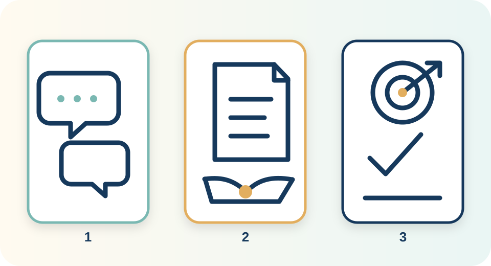
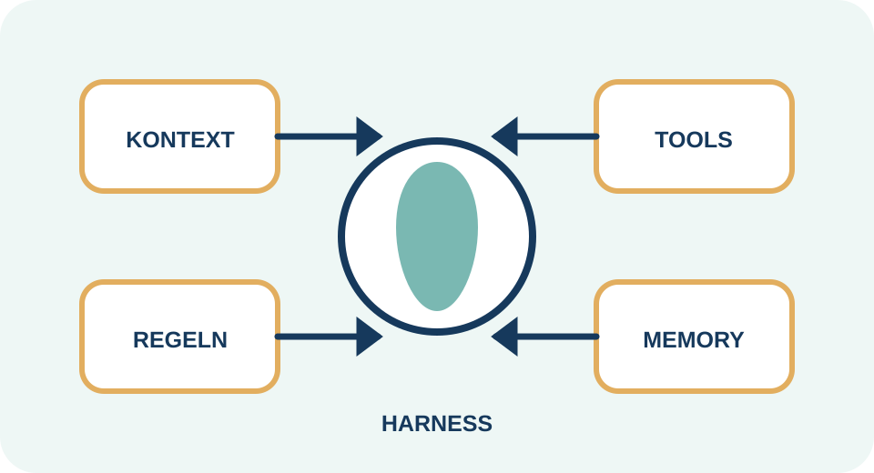
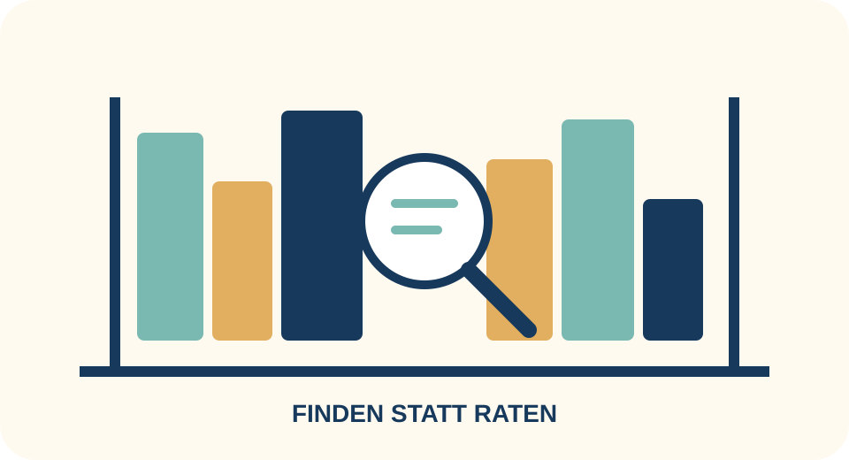
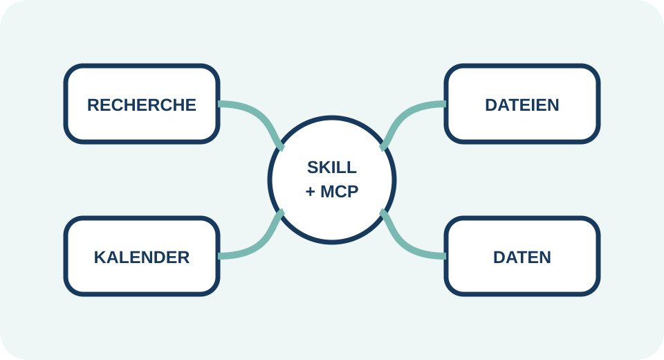
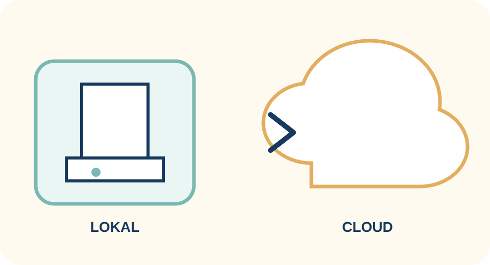

Wenn KI zur Infrastruktur wird: Wer kontrolliert sie?When AI becomes infrastructure: Who controls it?
KennenlernenGetting to know each other
Wo stehen Sie heute – und was möchten Sie delegieren?Where are you today—and what would you delegate?
1Welche Erfahrung haben Sie mit KI?What experience do you have with AI?
Noch keine · gelegentliche Chats · regelmäßige Nutzung · erste AgentenNone yet · occasional chats · regular use · first agents
2Welche Themen oder Aufgaben würden Sie einer KI übertragen?Which topics or tasks would you hand over to AI?
Sammeln Sie ein konkretes Beispiel – und eine Aufgabe, die Sie niemals ungeprüft übertragen würden.Name one concrete example—and one task you would never delegate without review.
Kurz zu zweit austauschen, danach drei Beispiele im Plenum sammeln.Discuss briefly in pairs, then collect three examples with the group.
Unser VersprechenOur promise
Verstehen. Ausprobieren. Selbst entscheiden.Understand. Try. Decide for yourself.
1 · EinordnenClassify
Modelle, Agenten, Harness, Kontext und Skills.Models, agents, harness, context and skills.
2 · ErlebenExperience
Vom Chat zur ausgeführten Aufgabe.From chat to completed task.
3 · AufbauenBuild
Hermes Desktop als persönliches KI-OS.Hermes Desktop as your personal AI OS.
4 · Souverän bleibenStay sovereign
Cloud und lokale KI bewusst kombinieren.Combine cloud and local AI deliberately.
01 · OrientierungOrientation
Warum KI jetzt jeden betrifftWhy AI now affects everyone
Eine kurze Geschichte – und ein Blick auf die neue Geschwindigkeit.A short history—and a look at the new speed.
1
Kurze GeschichteBrief history
Von Regeln zu handelnden SystemenFrom rules to systems that act
Symbolic AI
Menschen schreiben Regeln.Humans write rules.
Specialists
Maschinen schlagen Experten in engen Feldern.Machines beat experts in narrow fields.
Deep Learning
Daten ersetzen viele Regeln.Data replaces many rules.
Transformer
Kontext wird skalierbar.Context becomes scalable.
Chat
KI wird für alle bedienbar.AI becomes accessible to all.
Agents
KI plant, nutzt Werkzeuge, handelt.AI plans, uses tools, acts.
Der RollenwechselThe role shift
Chat → Assistenz → AgentChat → Assistant → Agent
Die entscheidende Veränderung ist nicht nur bessere Sprache – sondern der Übergang vom Antworten zum Ausführen.The decisive change is not only better language—it is the move from answering to executing.
Chat: antwortet auf eine FrageChat: answers a question
Assistenz: unterstützt bei Ihrer ArbeitAssistant: supports your work
Agent: führt vereinbarte Schritte selbst ausAgent: executes agreed steps

GeschwindigkeitSpeed
Fähigkeiten wachsen in Monaten, nicht JahrzehntenCapabilities grow in months, not decades
2022
Sekunden-Aufgaben und gute Texte.Seconds-long tasks and good text.
2024
Multimodal, Werkzeuge, lange Kontexte.Multimodal, tools, long contexts.
2025
Agentische Arbeitsabläufe über Minuten.Agentic workflows lasting minutes.
Heute
Immer längere Aufgabenketten – mit Kontrolle.Longer task chains—with oversight.
Orientierung: METR „time horizons“; Werte ändern sich laufend – Quellen im Anhang.Orientation: METR “time horizons”; values change continuously—sources in appendix.
Zwei mögliche ZukünfteTwo possible futures
Extreme Hebelwirkung – extreme MachtkonzentrationExtreme leverage—extreme concentration of power
🚀 ChanceOpportunity
Kleine Teams und Ein-Personen-Unternehmen erreichen Wirkung, für die früher Konzerne nötig waren. Das „Billionen-Unternehmen mit einer Person“ ist eine provokante Zielmarke, keine Prognose.Small teams and one-person companies achieve impact once reserved for corporations. The “one-person trillion-dollar company” is a provocative target, not a forecast.
🔒 RisikoRisk
Zentrale privat-staatliche KI kann Zugang, Sprache, Wissen und Verhalten filtern, überwachen oder lenken – ohne wirksame Ausweichmöglichkeit.Centralized public-private AI can filter, monitor or steer access, speech, knowledge and behavior—without a meaningful exit.
HandlungsfähigkeitAgency
Nicht „KI oder keine KI?“ Sondern: Wessen KI, mit welchen Regeln?Not “AI or no AI?” But: Whose AI, under whose rules?
02 · ErlebenExperience
Vom Chat zum HandelnFrom chat to action
Die gleiche Aufgabe – drei völlig verschiedene Arbeitsweisen.The same task—three completely different ways of working.
„Bereite mein Kundengespräch vor““Prepare my customer meeting”
Chat
Gib mir 10 Fragen für ein Kundengespräch.Give me 10 questions for a customer meeting.
generischgeneric
Copy & Pastecopy & paste
AssistenzAssistant
Nutze diese Kundennotizen. Erstelle Agenda und Fragen.Use these notes. Create an agenda and questions.
relevantrelevant
noch manuellstill manual
Agent
Lies die Projektdateien, finde offene Punkte, erstelle Briefing und speichere es. Nichts versenden.Read project files, find open items, create and save a briefing. Send nothing.
arbeitet end-to-endworks end-to-end
mit Freigabegrenzewith approval boundary
Nicht nur bessere AntwortenNot just better answers
Von Dateien zu Entscheidungen.From files to decisions.
4 · Lokal
LM Studio anbinden und vergleichen.Connect LM Studio and compare.
03 · BegriffeConcepts
Das kleine KI-LexikonThe compact AI glossary
Genug Fundament, um Systeme sinnvoll zu unterscheiden.Enough foundation to distinguish systems meaningfully.
3
LLM · Large Language Model
Ein Modell ist der Motor – nicht das AutoA model is the engine—not the car
LLM bedeutet „großes Sprachmodell“. Es berechnet wahrscheinlich passende nächste Tokens. Fähigkeiten entstehen aus Training, Kontext, Werkzeugen und Systemdesign.LLM means “Large Language Model.” It predicts likely next tokens. Capabilities emerge from training, context, tools and system design.
WichtigImportant
Dasselbe Modell kann in zwei Apps völlig unterschiedlich wirken.The same model can feel completely different in two apps.
Quantization / Quantisierung
Weniger Genauigkeit – viel weniger SpeicherLess precision—much less memory
Zahlen im Modell werden gröber gespeichert. Wie bei einem leicht unschärferen Foto bleibt das Motiv erkennbar und nutzbar, obwohl weniger Details gespeichert werden.Model numbers are stored with less precision. Like a slightly blurrier photo, the subject remains recognizable and useful while fewer details are stored.
FP16
Viele feine Abstufungen · größer · genauer.Many fine gradations · larger · more precise.
Q4
Weniger Abstufungen · deutlich kleiner · meist noch gut nutzbar.Fewer gradations · much smaller · often still useful.
Q4 bedeutet vereinfacht: Gewichte werden ungefähr mit 4 Bit statt 16 Bit gespeichert. Qualität und Speichergewinn hängen vom Verfahren ab.Simplified: Q4 stores weights at roughly 4 bits instead of 16. Quality and memory savings depend on the method.
Context
Der Arbeitstisch des ModellsThe model’s workbench
Prompt, Regeln, Gespräch, Dateien und Tool-Ergebnisse teilen sich ein begrenztes Kontextfenster.Prompt, rules, conversation, files and tool results share a limited context window.
Mehr Kontext ist nicht automatisch besser. Relevanter Kontext ist besser.More context is not automatically better. Relevant context is better.
KommunikationCommunication
Ein guter Auftrag beantwortet fünf FragenA good assignment answers five questions
1ZielGoal
Was soll fertig sein?What should be done?
2KontextContext
Was muss die KI wissen?What must AI know?
3QuellenSources
Worauf darf sie zugreifen?What may it access?
4GrenzenLimits
Was darf nicht passieren?What must not happen?
5PrüfungCheck
Woran erkennen wir Qualität?How do we judge quality?
Tool Use / WerkzeugnutzungTool use
Aus normaler Sprache entsteht ein präziser WerkzeugaufrufNatural language becomes a precise tool call
Das Sprachmodell rät nicht selbst. Es übersetzt den Auftrag in einen Werkzeugaufruf und nutzt das exakte Ergebnis.The language model does not guess. It translates the task into a tool call and uses the exact result.

Harness
Der Rahmen, der alles zusammenhältThe framework that holds everything together
Harness bedeutet wörtlich „Geschirr“ oder „Haltevorrichtung“. In einem KI-System ist es die Software-Hülle, die Modell, Kontext, Werkzeuge, Speicher, Regeln und Freigaben kontrolliert verbindet.Harness literally means a supporting or controlling framework. In an AI system it is the software shell that connects and controls the model, context, tools, memory, rules and approvals.
Modell = Motor. Harness = Fahrzeug mit Lenkrad, Bremsen und Armaturen.Model = engine. Harness = vehicle with steering, brakes and dashboard.
Memory + RAG
Erinnern ist nicht dasselbe wie NachschlagenRemembering is not the same as retrieving
RAG = Retrieval-Augmented Generation, deutsch etwa „abrufgestützte Generierung“: Das System sucht zuerst passende Textstellen und gibt sie dem Modell als Quelle für die Antwort.RAG = Retrieval-Augmented Generation: the system first retrieves relevant passages and gives them to the model as sources for its answer.
BeispielExample
Frage: „Welche Kündigungsfrist steht in unserem Vertrag?“ RAG findet den passenden Absatz; das Modell formuliert daraus die Antwort mit Quellenangabe.Question: “What notice period is in our contract?” RAG finds the relevant clause; the model answers from that source.
Second Brain: Ihre organisierte Wissenssammlung. RAG: die Such- und Zuführtechnik, die daraus relevante Stellen holt.Second brain: your organized knowledge collection. RAG: the retrieval technique that brings relevant parts into context.


Capabilities / FähigkeitenCapabilities
Anleitung, Abkürzung und AnschlussInstructions, shortcut and connection
Skill: eine wiederverwendbare Arbeitsanleitung, z. B. „News mit Quellen prüfen“.Skill: a reusable procedure, e.g. “verify news with sources.”
Command / Befehl: ein kurzer gespeicherter Starter wie /news-radar, der einen Skill mit Vorgaben aufruft.Command: a short saved starter such as /news-radar that invokes a skill with defaults.
MCP = Model Context Protocol: ein offener Verbindungsstandard – wie USB-C für KI-Werkzeuge und Datenquellen.MCP = Model Context Protocol: an open connection standard—like USB-C for AI tools and data sources.
LIVE · HERMES DESKTOP
Aktuelle News – ohne Link-SalatCurrent news—without link clutter
Recherchieren, Quellen vergleichen, Unsicherheit markieren, Briefing speichern.Research, compare sources, flag uncertainty, save a briefing.
Demo-PromptDemo prompt
Ein Auftrag mit QuellenstandardAn assignment with source standards
Erstelle ein Morgenbriefing zu „KI-Agenten“ für die letzten 7 Tage.
Nutze mindestens 5 belastbare Quellen, bevorzuge Primärquellen.
Trenne: Fakten, Einordnung, offene Fragen.
Nenne Datum und Link je Aussage.
Markiere Widersprüche und Unsicherheit.
Speichere das Ergebnis als news-radar.md.
Keine Anmeldungen, Käufe oder Nachrichten ohne meine Freigabe.Create a morning briefing on “AI agents” for the last 7 days.
Use at least 5 reliable sources, preferring primary sources.
Separate facts, interpretation and open questions.
Include date and link for each claim.
Flag contradictions and uncertainty.
Save the result as news-radar.md.
No sign-ins, purchases or messages without my approval.
08:00
T = Timer startenT = start timer
DebriefDebrief
Nicht die Antwort bewerten – den ArbeitsprozessEvaluate the workflow—not only the answer
Sind Primärquellen und Veröffentlichungsdaten sichtbar?Are primary sources and publication dates visible?
Sind Fakten und Einordnung getrennt?Are facts and interpretation separated?
Hat Hermes Rückfragen gestellt, wenn das Thema zu breit war?Did Hermes ask questions when the topic was too broad?
Wurde nur die erlaubte Datei verändert?Was only the permitted file changed?
Ein persönlicher Agenten-Harness, der Wissen, Fähigkeiten, Modelle und Regeln dauerhaft verbindet.A personal agent harness that persistently connects knowledge, capabilities, models and rules.
Persönliche InfrastrukturPersonal infrastructure
Der Kontext wechselt – das System lernt Ihre ArbeitsweiseContext changes—the system learns your way of working
Researcher
Quellen finden und prüfen.Find and verify sources.
Analyst
Daten und Dokumente einordnen.Interpret data and documents.
Operator
Dateien und Abläufe bearbeiten.Work on files and workflows.
Coach
Fragen stellen und Entscheidungen schärfen.Ask questions and sharpen decisions.
Jeder Schritt bleibt sichtbar und begrenzbarEvery step remains visible and bounded
AuftragTask
UI / Voice
OrientierungOrientation
SOUL + Rules
DenkenReason
Model
HandelnAct
Skills + MCP
AbsichernGuard
Hooks + Approval
Kein DogmaNo dogma
Lokal, wenn Kontrolle zählt. Cloud, wenn Spitzenleistung zählt.Local when control matters. Cloud when frontier capability matters.
Das KI-OS hält die Wahl beim Nutzer – pro Aufgabe und Datenklasse.The AI OS keeps the choice with the user—for each task and data class.

Vier gute GründeFour good reasons
Lokale Modelle sind eine Option – kein ReligionskriegLocal models are an option—not a religion
PrivatsphärePrivacy
Daten verlassen den Rechner nicht.Data stays on the machine.
Offline
Arbeiten ohne Verbindung.Work without connectivity.
KostenkontrolleCost control
Keine Tokenkosten je Anfrage.No per-token request cost.
LernenLearning
Modelle werden greifbar.Models become tangible.
ErwartungsmanagementExpectations
Kleiner, privater, günstiger – aber nicht immer stärkerSmaller, private, cheaper—but not always stronger
AufgabeTask
LokalLocal
Frontier Cloud
Klassifizieren, extrahierenClassify, extract
Sehr gutVery good
Sehr gutVery good
Private DokumentePrivate documents
KontrollierbarControllable
Vertrag prüfenCheck terms
Komplexe RechercheComplex research
begrenztlimited
meist stärkerusually stronger
Große AgentenläufeLarge agent runs
Hardwarelimithardware-limited
schnellerfaster
05 · AuswahlChoice
Welches System passt zu wem?Which system fits whom?
Nicht „bestes Tool“, sondern beste Passung und Kontrollierbarkeit.Not “best tool,” but best fit and controllability.
5
Vereinfachter VergleichSimplified comparison
Hermes, OpenClaw, Claude Code und CodexHermes, OpenClaw, Claude Code and Codex
System
StärkeStrength
ModellwahlModel choice
LokalLocal
Typische ZielgruppeTypical audience
Hermes Agent
persönliches, offenes KI-OSpersonal, open AI OS
breit / agnostischbroad / agnostic
JaYes
Alltag + Technikeveryday + technical
OpenClaw
offene Agenten-Experimenteopen agent experiments
variabelvariable
JaYes
Tüftlertinkerers
Claude Code
starkes Coding-Erlebnisstrong coding experience
Anthropic
Client lokallocal client
Developers
Codex
Coding, lokale und Cloud-Aufgabencoding, local and cloud tasks
OpenAI
Client lokallocal client
Developers
Unsere WahlOur choice
Ein Einstieg, der später nicht einsperrtAn entry point that does not lock you in later
Open Source
Systemlogik einsehbar und erweiterbar.System logic is inspectable and extensible.
ModellagnostischModel-agnostic
Cloud und lokale Modelle.Cloud and local models.
Desktop
Zugänglich ohne Terminal-Zwang.Accessible without requiring a terminal.
Eigene RegelnYour rules
Soul, Skills, Hooks und Freigaben.Soul, skills, hooks and approvals.
Kein pauschales „besser“: Für reine Softwareentwicklung können Claude Code oder Codex passender sein.Not universally “better”: Claude Code or Codex may fit pure software development better.
Hermes ProviderHermes providers
Starten mit dem, was schon verfügbar istStart with what is already available
Nous Portal
Schnellster Einstieg; verfügbare freie/inkludierte Modelle im Konto prüfen.Fastest entry; check free/included models available in your account.
ChatGPT / Codex OAuth
OAuth ist eine sichere Konto-Anmeldung ohne API-Schlüssel. Nutzt unterstützte OpenAI-Codex-Modelle – nicht automatisch alle ChatGPT-Modelle.OAuth is secure account authorization without an API key. It uses supported OpenAI Codex models—not automatically every ChatGPT model.
Grok OAuth
Erfordert einen passenden xAI-/SuperGrok-/Premium+-Zugang.Requires an eligible xAI/SuperGrok/Premium+ subscription.
Nicht immer das größteNot always the largest
Aufgabe, Risiko und Geschwindigkeit entscheidenTask, risk and speed decide
Erst Verbindung, dann Persönlichkeit, dann FähigkeitenConnection first, then personality, then capabilities
Nous Portal anmelden und verfügbares Modell testen.Sign into Nous Portal and test an available model.
Alternativ: unterstütztes Codex- oder Grok-OAuth verbinden.Alternatively connect supported Codex or Grok OAuth.
Ein schnelles Standardmodell und ein starkes Analysemodell merken.Identify one fast default model and one strong analysis model.
Arbeitsordner bewusst auswählen; keine privaten Verzeichnisse pauschal freigeben.Choose the workspace deliberately; do not broadly expose private folders.
Bonus-PromptBonus prompt
Onboarding als geführtes GesprächOnboarding as a guided conversation
Hilf mir, Hermes sicher einzurichten.
Stelle mir nacheinander höchstens 10 kurze Fragen zu:
Zielen, Aufgaben, Ton, Datenklassen, Freigabegrenzen,
bevorzugten Modellen, Arbeitsordnern, SOUL.md und optional Voice/TTS.
Erkläre jede Entscheidung anfängerfreundlich.
Zeige vor jeder Dateiänderung eine Vorschau und frage um Freigabe.
Speichere keine Geheimnisse in SOUL.md.Help me configure Hermes safely.
Ask at most 10 short questions, one at a time, about:
goals, tasks, tone, data classes, approval boundaries,
preferred models, workspaces, SOUL.md and optional voice/TTS.
Explain every decision for a beginner.
Preview every file change and ask before writing.
Never store secrets in SOUL.md.
SOUL.md
Arbeitsstil, Werte, Ton, Grenzen – keine Passwörter oder Tokens. Voice und TTS (Text to Speech / Sprachausgabe) sind optional und werden erst nach dem Text-Workflow aktiviert.Working style, values, tone, boundaries—no passwords or tokens. Voice and TTS (Text to Speech) are optional and enabled only after the text workflow works.
LIVE · HERMES DESKTOP
Aus drei Dateien wird ein umsetzbarer ArbeitsstandThree files become an actionable status
Lies nur den Ordner demo-projekt.
Extrahiere Entscheidungen, offene Punkte, Verantwortliche und Termine.
Markiere Widersprüche und fehlende Angaben.
Erstelle status.md und next-actions.csv.
Nichts versenden; keine Quelldatei ändern.Read only the demo-project folder.
Extract decisions, open items, owners and dates.
Flag contradictions and missing information.
Create status.md and next-actions.csv.
Send nothing; change no source file.
Aha-EffektAha moment
Hermes liest mehrere Formate, hält Grenzen ein, produziert zwei direkt nutzbare Artefakte und nennt Unsicherheit.Hermes reads multiple formats, respects boundaries, produces two usable artifacts and names uncertainty.
Vor LM StudioBefore LM Studio
Hardware messen, dann Modell wählenMeasure hardware, then choose a model
Hilf mir bei der Wahl eines lokalen LLM.
Ermittle – nur lesend – Betriebssystem, CPU, RAM,
GPU, dedizierten und gemeinsam genutzten Grafikspeicher sowie freien Speicher.
Frage nach meinen Aufgaben und Prioritäten.
Empfiehl danach 3 Modellgrößen: sicher, ausgewogen, experimentell.
Nenne Quantisierung, erwartete Geschwindigkeit und Grenzen.
Installiere oder lade noch nichts herunter.Help me choose a local LLM.
Read only: detect OS, CPU, RAM, GPU, dedicated/shared graphics memory and free disk.
Ask about my tasks and priorities.
Then recommend three model sizes: safe, balanced, experimental.
State quantization, expected speed and limitations.
Do not install or download anything yet.
Praxis-TippPractical tip
Den Check immer auf dem tatsächlich verwendeten Rechner ausführen. Modellgröße und Geschwindigkeit hängen von RAM, GPU-Typ, Grafikspeicher, Treibern und Kontextlänge ab.Always run the check on the computer that will actually be used. Model size and speed depend on RAM, GPU type, graphics memory, drivers and context length.
Ein lokaler OpenAI-kompatibler ServerA local OpenAI-compatible server
Vier Schritte zum lokalen Modell in HermesFour steps to a local model in Hermes
1 · LM Studio
Passendes GGUF-Modell laden – ein verbreitetes Dateiformat für lokale Modelle.Load a suitable GGUF model—a common local model file format.
2 · Server
Developer → Local Server starten.Developer → start Local Server.
Kurzer Prompt, dann Tool-Nutzung testen.Short prompt, then test tool use.
Base URL: http://127.0.0.1:1234/v1
API key: lm-studio
Model: exakt wie in LM Studio angezeigt
Gleicher Test, faire KriterienSame test, fair criteria
Nicht nach Gefühl vergleichenDo not compare by intuition
TestpromptTest prompt
Fasse dieses fiktive Sitzungsprotokoll in 5 Punkten zusammen.
Extrahiere Entscheidungen und nächste Schritte als Tabelle.
Erfinde nichts; kennzeichne fehlende Verantwortliche.Summarize this fictional meeting note in 5 bullets.
Extract decisions and next actions as a table.
Invent nothing; flag missing owners.
MessenMeasure
Zeit bis zur Antwort · korrekte Extraktion · Format · Halluzinationen · Datenschutz · KostenTime to answer · correct extraction · format · hallucinations · privacy · cost
TEAMÜBUNG · 12 MIN.TEAM EXERCISE · 12 MIN
Ein Agent auf einer SeiteOne agent on one page
ZielGoal
Welches Ergebnis?What result?
KontextContext
Welche Quellen?Which sources?
Tools
Welche Zugriffe?Which access?
GrenzenLimits
Was nie automatisch?Never automatic?
PrüfungCheck
Woran ist es gut?What means good?
QualitätscheckQuality check
Ein anderes Team prüft Ihren Agenten auf SchwachstellenAnother team tests your agent for weak points
Ist das Ziel eindeutig und prüfbar?Is the goal clear and testable?
Sind Datenzugriffe minimal?Is data access minimal?
Gibt es eine klare menschliche Freigabe?Is there a clear human approval point?
Was passiert bei Unsicherheit oder Tool-Fehlern?What happens under uncertainty or tool failure?
Nicht alles auf einmalNot everything at once
Eine kleine Aufgabe. Eine klare Grenze. Jeden Tag etwas besser.One small task. One clear boundary. Improve it every day.
Tag 1
Hermes installieren.Install Hermes.
Tag 2
Soul skizzieren.Draft your soul.
Tag 3–4
News- oder Dokumentenworkflow.News or document workflow.
Tag 5
Grenzen prüfen.Review boundaries.
Tag 6–7
Lokal testen und verbessern.Test locally and improve.
APPENDIX
Modelle, Hardware, Links und Setup-NotizenModels, hardware, links and setup notes
Stand: Release-Datum prüfenStatus: verify at release date
Drei Märkte statt einer BestenlisteThree markets, not one leaderboard
Frontier
OpenAI · Anthropic · Google · xAI
Open Source / China
Qwen · DeepSeek · GLM · MiniMax · Kimi
Local
Kleine instruct-/tool-fähige GGUF-Modelle passend zu RAM/VRAM.Small instruct/tool-capable GGUF models matched to RAM/VRAM.
Leaderboards sind Hinweise, kein Ersatz für den eigenen Test mit echten Aufgaben.Leaderboards are signals, not a replacement for testing your real tasks.
Startwerte, keine GarantieStarting points, not guarantees
Modellgröße folgt verfügbarem SpeicherModel size follows available memory
GerätDevice
Konservativer StartConservative start
HinweisNote
16 GB RAM / iGPU
3B–7B, Q4
kurzer Kontextshort context
32 GB RAM / 6 GB VRAM
7B–14B, Q4
Auslagerung testentest offload
32–64 GB / 12+ GB VRAM
14B–32B, Q4
Tool-Nutzung separat prüfentest tool use separately
LM Studio empfiehlt aktuell 16 GB RAM und 4 GB dedizierten VRAM; konkrete Modelle können deutlich mehr benötigen.LM Studio currently recommends 16 GB RAM and 4 GB dedicated VRAM; specific models may require much more.
Mini-GlossarMini glossary
Die wichtigsten Kürzel dieses WorkshopsThe key abbreviations in this workshop
AI / KIArtificial Intelligence / Künstliche Intelligenz
Vor jedem Workshop Versionsstände, Providerbedingungen, Modellnamen und Hardwareanforderungen anhand der Primärquellen aktualisieren.Before every workshop, refresh versions, provider terms, model names and hardware requirements from primary sources.
Handouts: Taste H · Übersicht: O · Sprache: L · Start: HomeHandouts: H · Overview: O · Language: L · Start: Home
Max PeterUnternehmer · Researcher · ReferentEntrepreneur · Researcher · Speaker
Über den ReferentenAbout the speaker
Max Peter
Künstliche Intelligenz, Agentic AI, IT-Sicherheit und dezentrale digitale Systeme.Artificial intelligence, agentic AI, IT security and decentralized digital systems.
Er studiert Politik & Technologie an der Hochschule für Politik München / TUM School of Social Sciences and Technology. Seine akademischen Schwerpunkte in Political Data Science, Big Data, KI-Ethik, Agentic AI und Cybersecurity Governance verbindet er mit praktischer Erfahrung als Datenschutz- und Informationssicherheitsauditor.He studies Politics & Technology at the Munich School of Politics and Public Policy / TUM School of Social Sciences and Technology. He combines academic work in political data science, big data, AI ethics, agentic AI and cybersecurity governance with practical experience as a data protection and information security auditor.
In Trainings und Workshops vermittelt er technische Grundlagen verständlich und unterstützt Organisationen dabei, KI strategisch, sicher, verantwortungsvoll und wertschöpfend einzusetzen.In training courses and workshops, he makes technical foundations accessible and helps organizations use AI strategically, securely, responsibly and productively.
Diese Präsentation darf geteilt und bearbeitet werden – mit Namensnennung und unter gleichen Bedingungen.This presentation may be shared and adapted—with attribution and under the same license.
Sie dürfenYou may
Inhalte kopieren, weitergeben, bearbeiten und für eigene Workshops verwenden.Copy, share, adapt and use the content in your own workshops.
Unter diesen BedingungenUnder these terms
Max Peter nennen, Lizenz verlinken, Änderungen kennzeichnen und Bearbeitungen wieder unter CC BY-SA veröffentlichen.Credit Max Peter, link the license, indicate changes and publish adaptations under CC BY-SA.
Sofern nicht anders gekennzeichnet. Fremde Logos, Screenshots, Studiengrafiken und andere gekennzeichnete Inhalte sind ausgenommen und unterliegen den Rechten ihrer jeweiligen Urheber.Unless otherwise indicated. Third-party logos, screenshots, study graphics and other marked content are excluded and remain subject to their respective owners’ rights.